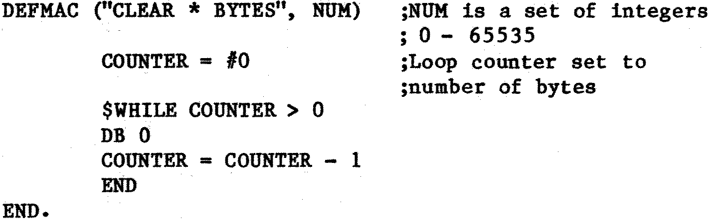

80-Bus News |
January–February 1984 · Volume 3 · Issue 1 |
| Page 50 of 55 |
|---|

So the macro call CLEAR 24 BYTES will set the next 24 bytes to zero. Notice that there may be spaces within the macro name thus increasing legibility. Other constructs are IF THEN .. ELSE , and REPEAT .. UNTIL. Expression handling is comprehensive with 18 operators and 4 number bases to work with.
As well as the usual assembler options you can also specify user defined options for such things as conditional assembly. i.e. the value of the boolean argument in an IF .. THEN block may be set by an option at assembly time. Assembly stops at the first error with a single word error message which is not always very helpful. RAVEN is rather slower than the other two assemblers but this is to be expected due to its design. I had the idea to add all the Equates that I use (e.g. port addresses, video ram addresses, keyboard control codes) to the permanent macro library to save having to put any in at the beginning of a program. While this worked perfectly OK, the macro library was by now so large that assembly time was painfully long. But I am using a 2 MHz Nascom 1 so the speed is obviously half of what it could be.
So there we are, three more assemblers for the Nascom. It would be a little unfair to say which is best since prices vary. Each has its good points – Compass is very fast, ZAP offers a macro/conditional assembler at a very low price, and RAVEN can be used very much depending on your own imagination.
The three assemblers are supplied by:
| Compass v1.3 | Level 9 Computing ___ _________ __ High Wycombe Bucks. ____ ___ | #12.00 |
| ZAP v1.6 | Syrtis Software __ ________ __ Bridgewater Somerset ___ ___ | #6.50 |
| RAVEN | P. Harvey __ _______ __ Oxford ___ ___ | #30.00 |
| Page 50 of 55 |
|---|